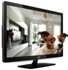
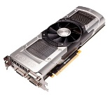
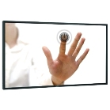
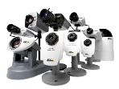
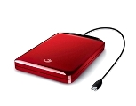

Статьи о компьютере
Новая Windows 8.
Недавно был представлен последний вариант операционной системы Windows 8, отличающийся от предыдущих версий и предлагающий новые возможности.подробнее >>
Bluetooth .Что это и зачем?
Почти 15 лет назад такие компании, как Nokia, Ericsson, IBM, Toshiba, Intel решили заменить малые проводные локальные сети на более дешевый беспроводной аналог, так и появился на свет проект, который известен всем под названием Bluetooth. Дословный перевод слова Bluetooth - «синий зуб».подробнее >>

подробнее >>
О технологии LED в современных телевизорах.
В основе LED-технологии лежит использование светодиодов (с англ. lightemittingdiode - LED), которые преобразуют электрический ток в световое излучение. За счет этого изображение получается более ярким, а цвета - насыщеннее.подробнее >>

подробнее >>
NVIDIA GeForce GTX 690.
Видеокарта из ныне существующих является самой быстрой двухчиповой картой, она создана на базе GPU Kepler повышенной энергоэффективности.подробнее >>

подробнее >>
Сенсорный экран глазами пользователя.
В повседневной жизни все мы очень часто сталкиваемся с сенсорными экранами: терминалы пополнения счетов, банкоматы и т.д. Но самое массовое распространение эта технология получила при помощи мобильных телефонов.подробнее >>

подробнее >>
Самостоятельная установка системы видеонаблюдения.
Современное оборудование для организации систем видеонаблюдения с каждым годом унифицируется все больше, что положительно повлияло на возможность собственноручно собрать такую систему любому человеку, не имеющему профессиональных навыков в этой области.подробнее >>

Оптический волоконный кабель.
Оптоволоконная линия систем на металле - это популярное и очень практичное преимущество на данный момент.подробнее >>
Всё о выборе usb -накопителя.
В XXI веке главным богатством мирового сообщества становится информация. Появляются новые и усовершенствуются старые технологии по хранению, переносу, записи информации.подробнее >>

подробнее >>
Покупка портативного или внешнего жесткого диска.
Вы решили приобрести внешний или переносной жесткий диск. Прежде чем делать это, ознакомьтесь с нашими советами.подробнее >>

Как работает кеш-память процессора.
Во всех современных процессорах имеется кэш-контролер с памятью. Кэш – это память, работающая на частоте процессора, предназначенная для временного хранения данных.подробнее >>